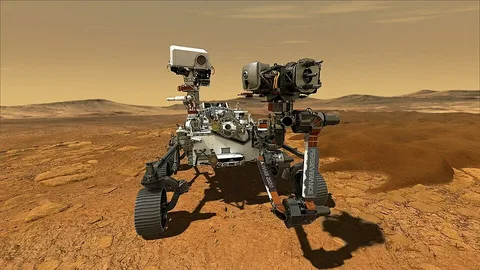

Марс назван в честь древнеримского бога войны. Из-за красноватого оттенка поверхности его часто называют "красной планетой".
Радиус Марса - примерно 3 390 км, масса - около 6,4 * 10 кг, что составляет всего 10,7% массы Земли. Сутки на Марсе длятся 24ч 37 мин, а год - 687 земный суток.
Атмосфера очень разрежена и состоит в основном из углекислого газа CO2 (около 95%). Средняя температура - 63С.
Спутники
У Марса два небольший спутника - Фабос и Деймос. Их имена в переводе с греческого означают "Страх" и "Ужас".
Поверхность
На Марсе находится самая высокая гора в Солнечной системе - вулкан Олимп высотой около 21 км. Это почти в 2,5 раза выше Эвереста.
Долгое время считалось, что на Марсе есть каналы, построенные марсианами - на самом деле это оптическая эллюзия.
В полярных шапках планеты обнаружен водяной лёд. Учёные предполагают, чтомиллиарды лет назад на Марсе были реки и океаны. "Марс - это единственная известная нам планета, населённая исключительно роботами". - популярная шутка астрономов.
Исследования

Первый успешный аппарат, достигший Марса, - "Маринер - 4"(1965 г.)
Сейчас на планете работают марсоходы Curiosity и Perseverance.
Подробнее о текущих миссиях - на официальном сайте NASA.
Контакты
Автор страницы: Иван Петров, группа ИС-21
Вопросы и замечания: ivan.petrov@example.com